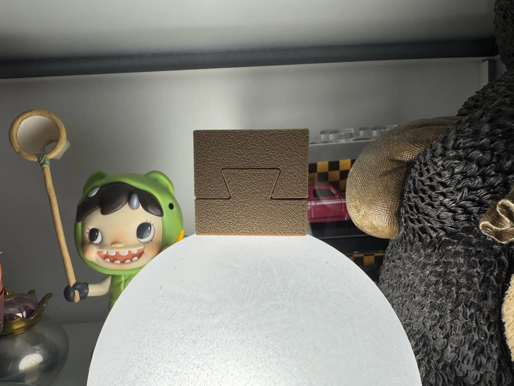

01 · Principle
为什么它更难被拔出来？
燕尾的侧壁向外张开。只要退出方向会让宽端撞上卯口，几何形状就会把简单的“拉出”变成对接触面的挤压与剪切。它不是凭一句“摩擦力更大”就解释完，而是先由几何约束改变了可能的运动。
星级为本项目的编辑性教学评分，不是实验测得的标准化性能值。
02 · First Physical Print
实物已经出现，证据才开始变得具体。
这不是渲染，也不是网格预览：下方照片记录了首个燕尾样件的实际打印状态。

本轮观察
- 该燕尾教学模型已完成一次实际打印。
- 徒手可以完成装配，但配合偏紧，需要明显用力。
- 照片中两件处于合拢状态，燕尾的宽端 / 颈部轮廓清晰可见。
- 表面层纹、边缘与配合区域将作为后续调参依据。
适用边界：“徒手可装配、偏紧”仅描述本次样件的主观手感。尚未记录材料、喷嘴、层高、插入力、晃动或实测间隙，因此不能单独给出通用 clearance 建议。
下一次记录需要补齐
打印条件
材料、喷嘴、层高、方向、支撑
材料、喷嘴、层高、方向、支撑
装配结果
插入力、拆卸与晃动
插入力、拆卸与晃动
尺寸证据
槽口 / 榫舌实测、失真与缺陷照片
槽口 / 榫舌实测、失真与缺陷照片
03 · Context
历史只讲到足够理解。
“燕尾”是一个跨家具、木作和建筑都能遇到的几何家族。不同语境下具体形态并不完全相同，因此网页第一版重点讲几何原理，不把抽屉燕尾、梁柱燕尾等不同变体混成一种。
Research sources
04 · Next
把一张照片变成可复现的结论。
- 回填本次打印的材料、喷嘴、层高与打印方向。
- 记录滑入、插入力、晃动、拆卸与实测间隙。
- 从同一 Onshape 版本导出 STEP / STL / GLB。
- 补拍失败样本、边缘缺陷与尺度参照。